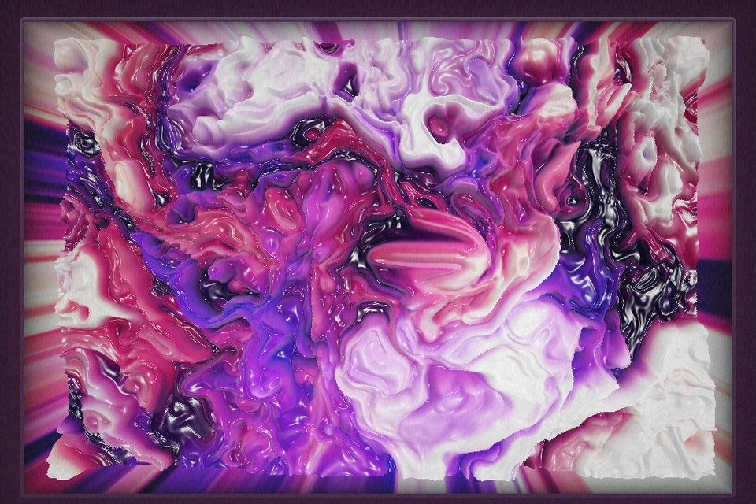
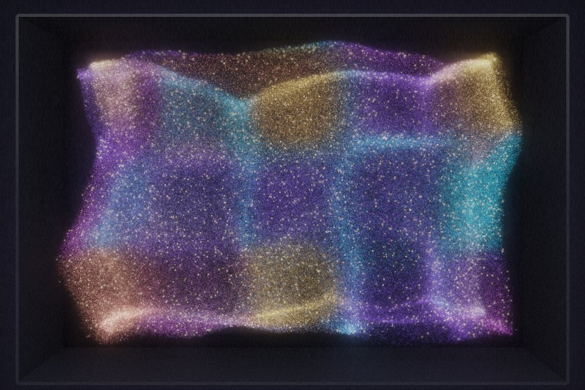
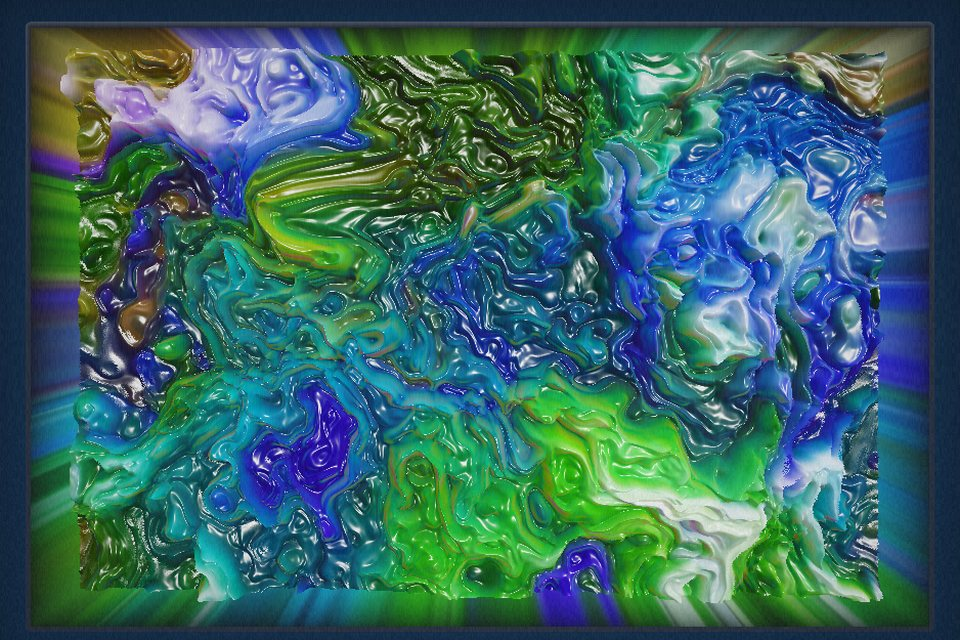

Artworks that keep moving on their own and answer to what is around them: your touch, the sound of the room, the edits of strangers on the other side of the world. Each one runs live in your browser and never plays the same way twice.

Every edit made to any Wikipedia, as it happens, lands in its language's corner of the canvas. Words added push the paint outward, words removed pull it in.

Hundreds of thousands of points of light fold into nebula-like sheets. Stir the dust with a finger, or give it music to pulse to.

Thick, glossy pigment swells out of its frame and drifts through moods of its own. It listens to the room: voices swell it, claps send ripples across it.
Best full screen on a large display in a dim room. They run on phones too. Each work needs a browser with WebGL 2, which every current browser has.
The microphone is analysed inside your browser and never recorded or sent anywhere. Tide of Edits connects your browser directly to Wikimedia's public stream of edits.
Hand-written WebGL shaders, no libraries and no AI services. Live data from Wikimedia EventStreams.